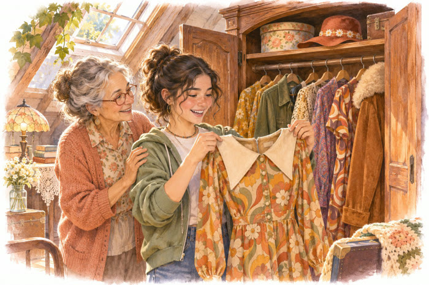

Listen to the text
Speed:

Last August I helped my grandmother to clean the attic of her old house. I expected to find dust and spiders. I didn't expect to find a hundred years of fashion in one wardrobe. The wardrobe was huge and dark, and its door refused to open at first. When I finally managed to pull it, I saw a row of clothes in paper covers. Grandma sat down on a box and began to tell me about them. The first thing was a long linen shirt with red and black embroidery. "My grandmother made it in the 1920s," she said. "Girls learnt to embroider before they learnt to read. She spent a whole winter making it for her wedding." The stitches were so small that I could hardly see them. Next to it hung a grey wool coat with wide shoulders from the 1940s. "In those years nobody thought about fashion," Grandma said. "People wanted to keep warm. My mother wore this coat for fifteen winters. She avoided throwing anything away." Then came the 1960s: a short bright dress with big circles. "That one is mine," Grandma smiled. "I was nineteen. My father told me to stop wearing it because it was too short. I promised to listen, and I went on wearing it." The 1970s gave us my grandfather's flared trousers, as wide as sails, and a shirt with an enormous collar. I tried the trousers on, and we both laughed until we cried. From the 1990s there was my mother's denim jacket with shoulder pads and a pair of leggings in a terrible shade of pink. "She begged me to buy them," said Grandma. "All the girls dreamt of having such leggings." "And what will I leave here?" I asked. "Probably that hoodie," she said. "In fifty years your grandchildren will find it and laugh." Before we went downstairs, Grandma let me take the embroidered shirt. I have decided to wear it on Vyshyvanka Day. It is a hundred years old, and it is the most beautiful thing I have ever put on. Fashion keeps changing, and every generation enjoys laughing at the one before. But some things are worth keeping. They remember the hands that made them.
Tap any sentence to hear it again.
Сподобалось? На сайті ще більше матеріалів для вчителів!
Reader, презентації, ігри, діагностичні та контрольні роботи до підручників 1-11 класів.
Перейти на сайт materials.allaenglish.com